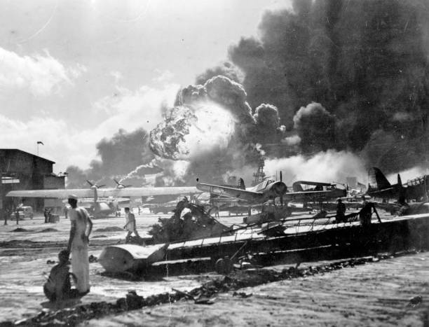
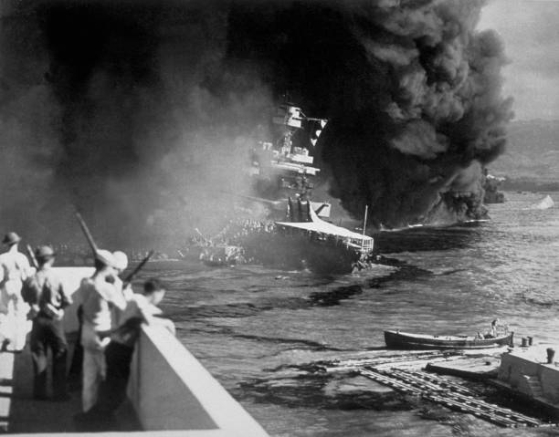

The Pearl Harbor Memorial, located in Honolulu, Hawaii, is a powerful tribute to those who lost their lives in the tragic attack of December 7, 1941. The most iconic part of the memorial is the USS Arizona Memorial, which floats above the sunken battleship. It marks the final resting place for over 1,100 sailors and Marines who were killed on board.
Visitors can access the memorial by boat and experience a quiet, respectful environment with names of the fallen engraved in marble. The site also includes a museum and exhibits that tell personal stories, show artifacts from the attack, and honor the courage of the service members.
On the morning of December 7, 1941, Japan launched a surprise military strike on the U.S. naval base at Pearl Harbor. The attack began just before 8:00 a.m. and lasted less than two hours, but the damage was massive: more than 2,400 Americans were killed, over 1,000 were wounded, and numerous ships and aircraft were destroyed or damaged.
The goal of the attack was to weaken the U.S. Pacific Fleet and prevent interference in Japan's expansion across Asia. However, instead of keeping the U.S. out of the war, the attack united Americans and led to the U.S. declaring war on Japan the very next day, officially entering World War II. The event became a turning point in world history and remains one of the most significant military moments of the 20th century.
